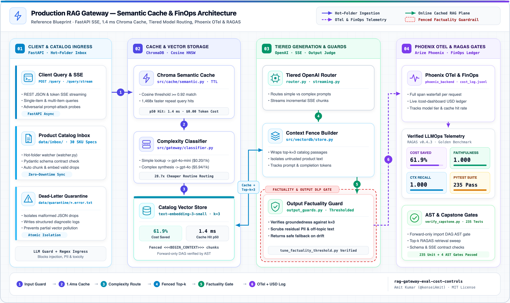

Complexity-Tiered Model Router & Per-Request USD Ledger
Classifies incoming queries so routine catalog lookups run on gpt-4o-mini (28.7x cheaper per call) while complex comparisons route to gpt-4o, visualized live on /cost-dashboard.
Production FastAPI SSE RAG Gateway Achieving 61.9% Tiered-Routing Cost Savings, 1.4 ms Semantic Cache Hits, 1.000 RAGAS Recall & Arize Phoenix OTel Tracing
Slashing Customer-Facing GenAI Inference COGS by 61.9%+ While Accelerating Repeat Answers 1,468x
How this system enforces security, observability, fault isolation, unit economics, and automated verification beyond notebook prototypes.
Complexity router dispatches factual lookups to gpt-4o-mini ($0.00020) and reserves gpt-4o ($0.00594) for multi-item synthesis, logged in cost_log.jsonl.
Embedded Chroma cosine-similarity cache (>= 0.92 threshold + TTL) serves repeat/paraphrased queries in 1.4 ms at $0.00 API cost.
In-process Arize Phoenix OpenTelemetry span hierarchy captures guardrails, cache lookup, embedding, retrieval top-k, and token micro-costs.
Hot-folder watcher (src/ingestion/watcher.py) validates incoming product JSON schemas, indexing valid docs and isolating malformed payloads in quarantine/.
Combines LLM Guard + regex PII/injection filters with <<<BEGIN_CONTEXT>>> untrusted chunk delimiters and post-generation factuality judging.
verify_capstone.py enforces 235 unit tests, schema completeness, cross-package wiring, and an AST check proving strict forward-only package imports.
End-to-end execution graph paired with nominal request flow and adversarial / degraded fault-handling paths.

flowchart LR
U["Client Request<br/>(/query, /query/stream)"] --> G1["Input Guardrails<br/>(Injection, PII, Toxicity, Topic)"]
G1 --> SC{"Chroma Semantic<br/>Cache (>= 0.92)?"}
SC -- "Hit (1.4ms, $0)" --> OUT["Grounded JSON / SSE Stream"]
SC -- "Miss" --> CL["Complexity Router<br/>(gpt-4o-mini vs gpt-4o)"]
CL --> RET["ChromaDB Vector Store<br/>(k=3 + <<<BEGIN_CONTEXT>>> Fence)"]
RET --> GEN["OpenAI Generation<br/>+ Phoenix OTel Spans"]
GEN --> G2["Output Guardrails<br/>(Factuality, PII Scrub, Schema)"]
G2 --> COST["Per-Request USD Ledger<br/>(data/cost_log.jsonl)"]
COST --> OUT
POST /query or SSE /query/stream; input_guards.py clears injection, toxicity, PII, and off-topic checks.semantic.py checks Chroma cache (cosine >= 0.92); cache hits return grounded JSON/SSE immediately in 1.4 ms ($0).classifier.py scores query complexity (simple -> gpt-4o-mini, complex -> gpt-4o) and retrieves k=3 fenced chunks.output_guards.py verifies groundedness & PII safety, emits Arize Phoenix OTel spans, and appends exact USD micro-cost to cost_log.jsonl.bad_001.json) fails Pydantic schema validation in watcher.py and routes to data/quarantine/ with .error.txt diagnostics—zero index corruption.input_guards.py before embedding or LLM invocation.output_guards.py factuality threshold (tune_factuality_threshold.py) and returns a safe fallback.dependency-graph-forward-only AST gate.Every capability below links directly to the verified source module, policy configuration, or CI workflow in kenseiAmit/rag-gateway-eval-cost-controls.
Classifies incoming queries so routine catalog lookups run on gpt-4o-mini (28.7x cheaper per call) while complex comparisons route to gpt-4o, visualized live on /cost-dashboard.
1.4 ms, TTL-Managed)Eliminates external Redis container overhead by embedding a dedicated Chroma semantic cache collection (cosine >= 0.92), cutting repeat latency 1,468x.
Streams grounded tokens incrementally over /query/stream while still enforcing input/output guardrails and recording accurate completion token costs.
Monitors data/inbox/ for new product JSONs, embeds valid specs via text-embedding-3-small, and isolates schema-invalid files into quarantine/ with structured error logs.
Instruments every pipeline hop with OpenTelemetry spans (phoenix_backend.py + noop_backend.py fallback) for full latency waterfall and retrieval inspection.
Sweeps chunk retrieval k against a golden Q&A benchmark (1.000 faithfulness, 1.000 context recall, 0.922 relevancy) alongside 235 automated pytest assertions.
Key architectural decisions balancing determinism, latency, cost, privacy, and operational maintainability.
| Architectural Decision | Naive Prototype Anti-Pattern | Production Engineering Choice & Outcome |
|---|---|---|
| Embedded Chroma Semantic Cache vs. External Redis Stack | Requiring a separate Redis Stack cluster just for vector caching, adding operational infra overhead and network hop latency. | In-process Chroma cosine cache (>= 0.92) with TTL expiration: zero extra containers and 1.4 ms cache hits. |
| Tiered Complexity Routing vs. Single Frontier Model | Sending 100% of FAQ traffic to gpt-4o, burning $0.0059+ on single-attribute weight/price questions. |
Pre-retrieval complexity routing to gpt-4o-mini saves 61.9% USD while preserving 1.000 golden-set faithfulness. |
| Hybrid Lexical/Regex + LLM Judge Guardrails | Downloading multi-hundred-MB transformer guardrail weights at startup, causing cold-start timeouts and corporate proxy failures. | Zero-latency deterministic regex/PII guards paired with configurable LLM factuality judging. |
| Dead-Letter Quarantine on Hot-Folder Ingestion | Crashing the ingestion worker or silently indexing partial null fields when upstream catalog JSONs are malformed. |
Atomic schema check moving bad payloads to data/quarantine/*.error.txt while keeping the live index clean. |
Recorded execution traces, benchmark sweeps, and raw repository JSON artifacts.



{
"ragas_aggregate": {
"faithfulness": 1.0,
"answer_relevancy": 0.9221873611954298,
"context_recall": 1.0,
"context_precision": 0.7499999999425
},
"sample_eval_question": "What is the weight of the Selkirk AMPED S2?",
"sample_eval_response": "The Selkirk AMPED S2 weighs 7.8 oz.",
"cost_ledger_excerpt": [
{
"timestamp": "2026-10-04T15:23:43.305924+00:00",
"model": "gpt-4o-mini",
"prompt_tokens": 905,
"completion_tokens": 118,
"cost_usd": 0.00020655,
"query_type": "hallucination_check"
},
{
"timestamp": "2026-10-04T15:55:30.305924+00:00",
"model": "gpt-4o-mini",
"prompt_tokens": 1138,
"completion_tokens": 55,
"cost_usd": 0.0002037,
"query_type": "simple"
},
{
"timestamp": "2026-10-04T16:20:49.305924+00:00",
"model": "gpt-4o-mini",
"prompt_tokens": 1050,
"completion_tokens": 73,
"cost_usd": 0.00020130000000000001,
"query_type": "simple"
},
{
"timestamp": "2026-10-04T16:52:13.305924+00:00",
"model": "gpt-4o",
"prompt_tokens": 1248,
"completion_tokens": 282,
"cost_usd": 0.00594,
"query_type": "complex"
}
]
}
make verify (scripts/verify_capstone.py) validates 235 passed unit tests, forward-only package dependency DAG (4 passed), QueryResponse contract (5 passed), and end-to-end gateway wiring (6 passed).
cp .env.example .env uv sync # Seed ChromaDB product catalog (30 items) & run all 235 unit/integration tests uv run python scripts/load_data.py uv run pytest # Start FastAPI RAG Gateway (SSE streaming + /cost-dashboard) uv run uvicorn src.gateway.app:app --reload --port 8000
Customer-facing RAG assistants frequently fail unit-economics review at scale: sending every routine product weight, sizing, or policy lookup to a frontier model (gpt-4o at $5.94 / 1k queries) erodes gross margin and creates multi-second wait times that hurt e-commerce conversion. This gateway pairs pre-retrieval complexity routing (gpt-4o-mini at $0.20 / 1k—28.7x cheaper) with an embedded 1.4 ms Chroma semantic cache ($0 token spend) while proving 1.000 RAGAS faithfulness and context recall.
Translating engineering guardrails, determinism, and cost controls into executive deployment readiness.
28.7x on single-attribute product questions.'waterproof rating on jacket' vs 'is this rainproof?') re-trigger full embedding + LLM billing.null attributes.61.9% inference cost reduction on uncached traffic—climbing past 75%+ total savings as semantic cache hits accrue.1.4 ms p50) instant answers on repeat shopper questions + SSE token streaming minimize cart/support abandonment./cost-dashboard + cost_log.jsonl give Finance exact per-request USD attribution across model tiers.Every production engineering feature in kenseiAmit/rag-gateway-eval-cost-controls mapped directly to the commercial risk it eliminates and the measurable value it delivers.
| Production Engineering Feature (Source) | Business Risk / Bottleneck Eliminated | Value Lever | Quantified Business Outcome |
|---|---|---|---|
|
Complexity-Tiered Router & Per-Query USD Ledger
|
Runaway LLM inference bills turning high-volume customer support/search into a negative-margin cost center. | Gross Margin / FinOps | 61.9% measured LLM cost reduction ($0.00020 gpt-4o-mini vs $0.00594 gpt-4o) with real-time /cost-dashboard visibility. |
|
Embedded Chroma Cosine Semantic Cache (
>= 0.92, TTL) |
Paying repeatedly for paraphrased product questions + paying fixed cloud bills for an external Redis vector cluster. | COGS & Conversion Latency | 1.4 ms p50 response (1,468x faster than 2,055 ms) at $0.00 token cost and $0 extra cache infrastructure. |
|
FastAPI Server-Sent Events (SSE) Streaming Pipeline
|
Multi-second blank-screen spinners on complex multi-product comparisons hurting shopper engagement. | Customer Conversion UX | Delivers instant progressive token rendering while preserving full input/output guardrails and exact cost logging. |
|
Hot-Folder Watcher with Dead-Letter Quarantine
|
One malformed merchandising JSON (bad_001.json) halting catalog sync or serving broken specs to customers. |
Storefront Uptime | 100% index availability during bad data drops; invalid files isolated to quarantine/*.error.txt for rapid vendor fix. |
|
Arize Phoenix OpenTelemetry Span Hierarchy
|
Blind multi-hour incident triage when latency spikes or retrieval relevance drifts in production. | SRE MTTR Reduction | Single-trace waterfall pinpointing exact ms latency and micro-cost across guardrails, cache, retrieval, and generation. |
|
RAGAS v0.4.3 Sweeps & Forward-Only AST Dependency Gate
|
Aggressive cost optimization silently degrading answer truthfulness or architectural coupling slowing feature velocity. | Brand Accuracy & Velocity | Proves 1.000 faithfulness & 1.000 recall alongside 235 automated tests and enforced clean package layering. |
How architectural invariants convert directly into FinOps margin, SLA speed, and regulatory protection.
flowchart LR
subgraph Controls["Production FinOps & Reliability Controls"]
C1["Chroma Semantic Cache (>=0.92)"]
C2["Query Complexity Tiered Router"]
C3["Dead-Letter Ingestion Quarantine"]
C4["RAGAS v0.4.3 + Factuality Judge"]
end
subgraph Mech["Runtime Unit-Economics Effect"]
E1["1.4 ms Hit · Bypasses Embedding & LLM"]
E2["Simple -> gpt-4o-mini ($0.00020) vs gpt-4o ($0.00594)"]
E3["Isolates Malformed Catalog JSONs"]
E4["Verifies Groundedness on Every Tier"]
end
subgraph ROI["Measurable P&L & CX Value"]
V1["$0 Marginal Cost + 1,468x Faster UX"]
V2["61.9% Direct Inference COGS Savings"]
V3["Zero Catalog Search Downtime"]
V4["1.000 Faithfulness & Recall Preserved"]
end
C1 --> E1 --> V1
C2 --> E2 --> V2
C3 --> E3 --> V3
C4 --> E4 --> V4
Calculates exact annual USD savings from measured repo micro-costs ($0.00594 naive gpt-4o vs. $0.00226 tiered-routed blend + $0.00 semantic cache hits).
cost_log.jsonl): Naive gpt-4o = $5.94 / 1k queries (2,055 ms p50). Uncached tiered router = 61.9% savings ($2.26 / 1k queries). Chroma semantic cache hit (cosine >= 0.92) = $0.00 API spend & 1.4 ms p50 latency.
How this single architecture aligns Engineering, Finance, Security, Legal/Compliance, and Business Operations.
Transforms unbounded frontier-LLM variable spend into predictable, per-query attributed unit economics without adding Redis infra.
Instant answers on top product questions and live token streaming keep shoppers engaged at high-intent buying moments.
AST-enforced modular architecture, dead-letter ingestion quarantine, and full OpenTelemetry spans slash maintenance and MTTR.
Post-generation factuality judging, PII redaction, and untrusted context fencing prevent hallucinated product claims.